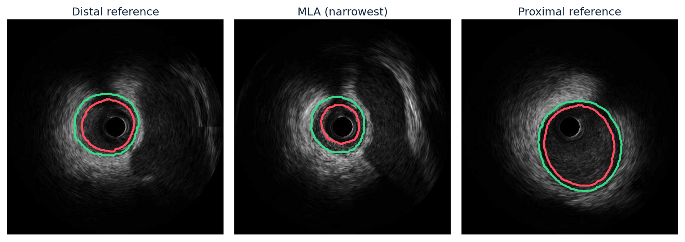
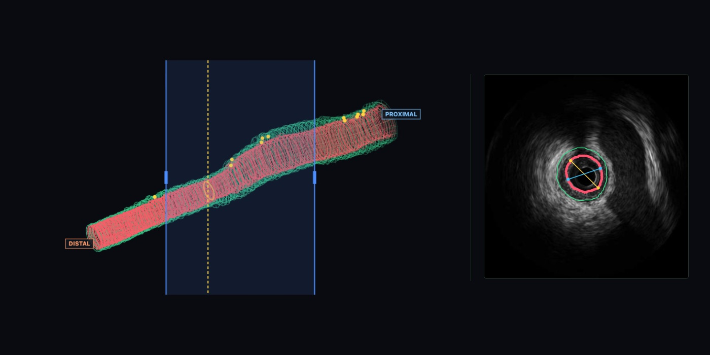
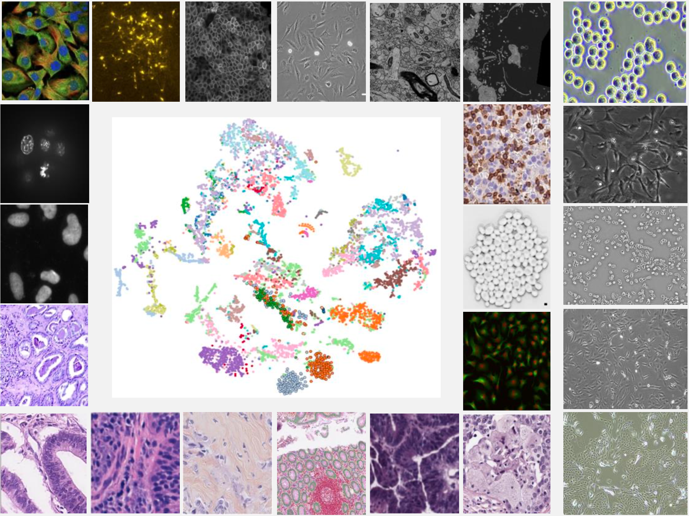

Organoids across time
I prepare organoid datasets and evaluation formats that preserve overlapping masks, and explore how organoids change across frames. Candidate division and fusion events are surfaced for review.
YUNSHU CHEN / RESEARCHER & ENGINEER
I'm Yunshu, a software engineer and PhD candidate at Monash University. I build imaging models, analysis tools and the software that brings them into practice.
Open to full-time opportunities · Melbourne

01 / SELECTED WORK

01 / CLINICAL IMAGINGModels that measure vessels. Software that prepares reports for cardiologist review.

02 / BIOLOGICAL IMAGINGLeadCell software in use at Lead Healthcare, alongside research into tracking and image resolution.
02 / BEYOND THE MODELS
At PredictX Health, I work with clinical collaborators on data for colorectal cancer research. I also teach tutorials in postgraduate data science at Monash and build open-source tools for everyday research.
RESEARCH × ENGINEERING
Imaging models, software people use, and the data that connects them. A selection of my work with clinical, research and industry partners.
October 2023–present · Three collaborations below
VICTORIAN HEART INSTITUTE × MONASH
Coronary ultrasound analysis
I build models that measure vessels and software that organises the results for cardiologists to review.
IVUS · vessel boundary overlay
Intravascular ultrasound (IVUS) captures a sequence of cross-sectional images from inside a coronary artery. My work concerns the next steps: outlining the vessel, calculating measurements and presenting the results for a cardiologist to review.
I build the data processing, models and review software. Our cardiology partners provide the cohorts, annotations and clinical judgement. The three projects below address different parts of this work and are at different stages.
I developed the segmentation and measurement pipeline with agreement against expert readings as a goal from the start. Knowledge distillation made the model smaller and faster on CPU, so deployment would not depend on a GPU. The paper is under review.
I built an agent that calls measurement tools and drafts a report from their outputs. A local Qwen model organises these steps, while the review interface lets cardiologists inspect the images and report together. I have prepared 35 cases; cardiologist review is ongoing.
I am pre-training a model on an image collection from two scanner platforms. The research asks how detailed supervision available from one platform can help analyse images from the other. I built the DICOM processing and training infrastructure. This project is ongoing.
3D context. Cross-sectional measurements.
The software also supports contour editing and selecting a segment for volume measurements.
GeoCat was evaluated using five-fold patient-disjoint cross-validation. Distillation reduced model size by 2.6× and improved CPU speed by 3×. The separate pre-training corpus contains 49.6 million frames from 28,753 pullbacks.
The agent uses JSON Schema tool definitions, Pydantic state records and retrieval of previous clinician feedback. Eight decision tools include guideline citations. Qwen2.5-7B runs locally with vLLM.
For GeoCat, agreement with expert lumen and vessel area measurements was CCC 0.94 and 0.96. Agreement at the evaluated plaque-burden threshold was 84% (κ 0.67). These results describe the measurement model; the reporting agent is still being reviewed.
LEAD HEALTHCARE × MONASH
LeadCell & cell-analysis research
Cell-segmentation models, packaged as software for laboratory use. Related research explores tracking and evaluation.
The main deliverable is LeadCell, cell-segmentation software used at Lead Healthcare. Around it, I work on three practical questions: how to separate cells in an image, how to follow them through a video, and how to evaluate a model when cell size and imaging conditions change.
I developed the segmentation model and packaged it as software, with a React interface and an API for internal laboratory use. The training data covers more than 100,000 images and eight million cell instances. LoRA fine-tuning supports new cell types with 5–10 samples. Software is in use; model development continues.
Separate projects. Shared questions about cell analysis.
Further research
An early-stage project focused on preparing and annotating confocal imaging data for tissue structures and features. The current work is building the annotated dataset for later model development.
Cell_Collection gathers and standardises microscopy datasets, with checks for duplicate images and overlap between benchmarks. These tools support more consistent model comparison.
AUSTRALIAN REGENERATIVE MEDICINE INSTITUTE × MONASH
Zebrafish segmentation & analysis software
With the Australian Regenerative Medicine Institute, I developed a method for separating muscle segments in zebrafish images and delivered a PyQt analysis interface to biologists. Evaluation covered 121 images from 35 fish, with healthy and muscular-dystrophy images. The paper is under review.
PREDICTX HEALTH × WESTERN HEALTH
Clinical data engineering
At PredictX Health, I turn scattered clinical records into datasets the research team can work with. I build processing pipelines, check treatment and imaging data, and prepare analyses and documentation so questions can be traced back to the source and reviewed with clinical collaborators.
COLORECTAL CANCER RESEARCH
OPEN SOURCE / BUILT FOR EVERYDAY RESEARCH
Tools I built to keep research organised and reproducible.
I wrote this command-line logbook to keep experiment results, figures and decisions together. It saves Markdown and YAML files with Git history and integrates with Claude Code.
Tools for collecting and organising cell-segmentation data. The collection covers 186 public datasets from seven sources, with an audit of duplicate data and potential benchmark leakage.
PUBLICATIONS & RESEARCH
Three first-author manuscripts under review, spanning coronary imaging, cell tracking and zebrafish segmentation.
The cell-tracking entry uses a project title; the formal manuscript title will be added when available.
THE PATH SO FAR
I studied software development at the University of Sydney, where I built an encrypted mobile storage app for my honours project. After working on speech recognition at NIO, I began my PhD at Monash. My current work brings that software background into medical and biological imaging.
Melbourne, Australia · Software engineering → medical AI
Oct 2023 – Apr 2027 (expected)
PhD, Data Science & Artificial Intelligence, Monash University
Supervised by Dr Deval Mehta. Partners: Victorian Heart Institute, Apollo Medical Imaging, Lead Healthcare, Australian Regenerative Medicine Institute.
Feb 2019 – Jun 2023
BAdvComputing (Honours II-1), The University of Sydney
Honours project: built and delivered an encrypted mobile storage app using React Native, Spring Boot and AWS S3.
Jul 2022 – Dec 2022
Speech Recognition Algorithm Engineer, Intern (Full-time), NIO
Worked on multilingual speech recognition, automated diagnostics for more than 60 production recognition issues, and model integration with product, UX and language-understanding teams.
Mar 2022 – Jul 2022
Research Intern, Institute of Psychology, Chinese Academy of Sciences
MRI experiment design and an automated small-sample MRI pipeline in Python and FSL.
Jul 2025 – Present
Teaching Assistant (Sessional Academic), Monash University
FIT5196 and FIT5145, 60+ postgraduate students, 92/100 student satisfaction. Student Representative since February 2026.
2021 – 2022
General Executive, 94th SRC & Student Member of Academic Board, The University of Sydney
Elected to the SRC executive and served as a student member of the Academic Board. Contributed to the Sydney in 2032 strategy and a new academic integrity framework.
Software
Models and agents
Data and deployment
Development tools
Combined CT perfusion images with clinical variables to study stroke outcomes, with separate models for endovascular-treatment and non-treatment pathways.
Built and delivered a cross-platform mobile app using React Native, Spring Boot, Node.js and AWS S3, with Jenkins for continuous integration and delivery.